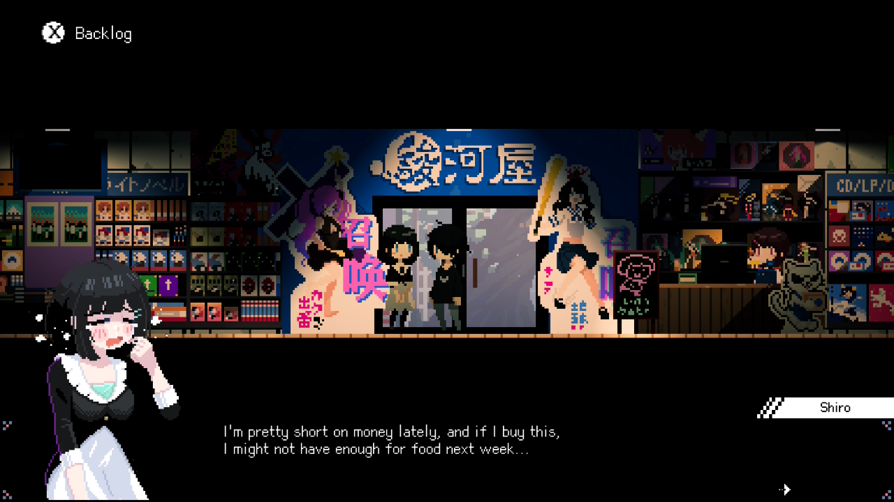
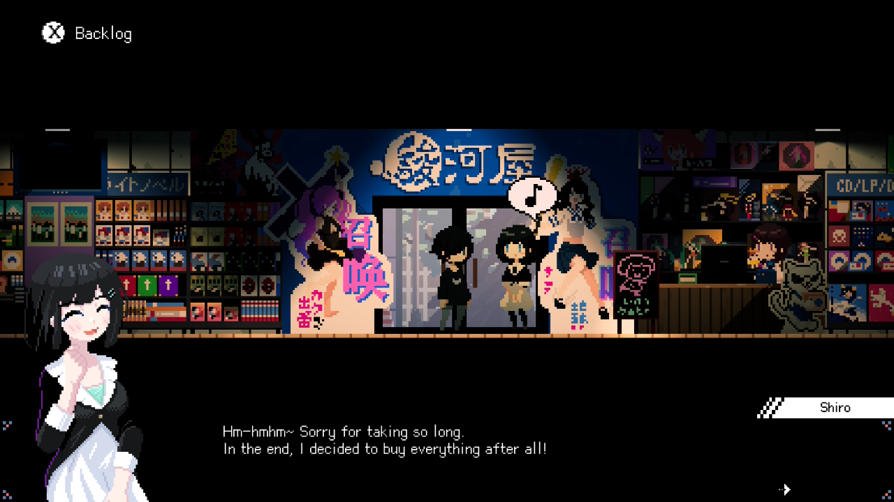
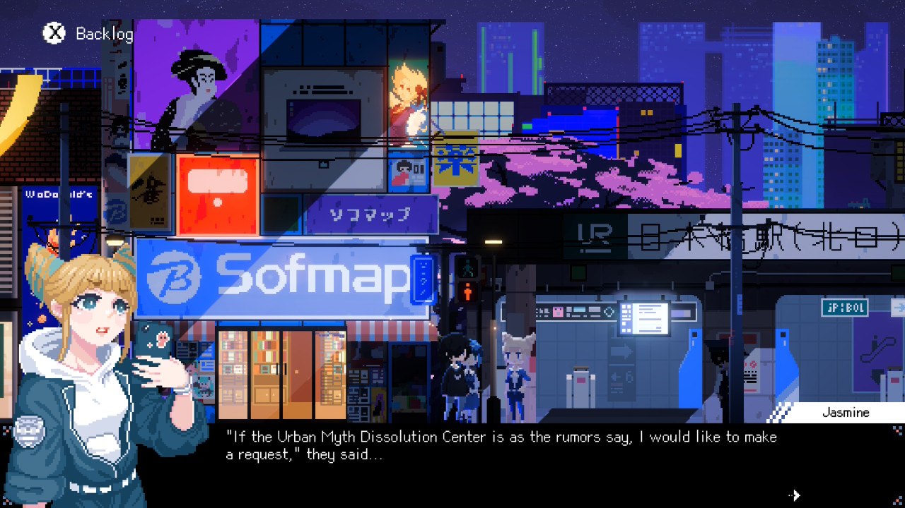
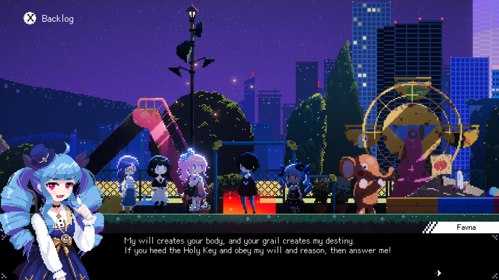
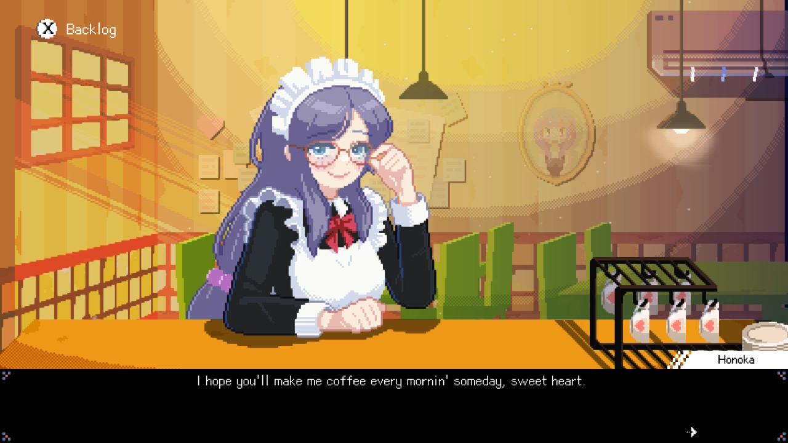
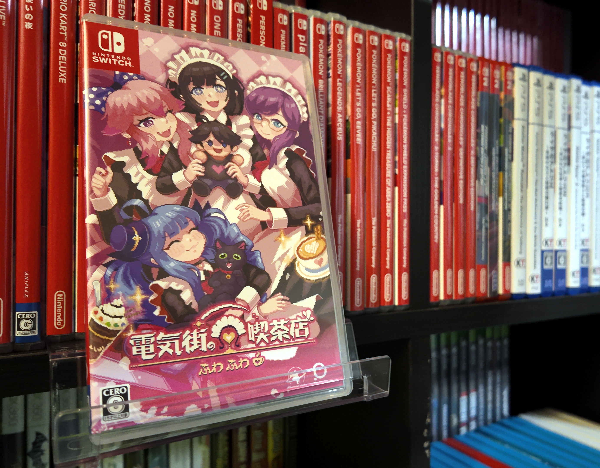

1game1week - Week 14 (4/9/26) - Maid Cafe on Electric Street
Hey all! It's Week 14! Anyways!New games from 4/2 -> 4/8: - None! (Total 8)
As of 4/9, my yearly backlog was at -14 (lower is better, -+0 since last week). And onto 1g1w. A game is considered "beaten" if I've accomplished the main objective of the game, regardless of how many routes / endings I've achieved. However, it's preferable to get all endings if possible! GAME(S): Maid Cafe on Electric Street PLATFORM: Switch GENRE: Management Sim / Adventure / Cozy STARTED ON: 3/16 BEATEN ON: 3/24 TOTAL PLAYTIME: 15 hours (Tracked via Nintendo Store App) I'm not usually one to play these types of games. By that, I mean cozy management sims. Maid Cafe on Electric Street, however, is something I have had my eye on for a while now. Weirdly enough, it's because of one of the maid's voice actress being Ikumi Hasegawa, who voices Arcueid Brunestud (Tsukihime's main heroine) and Kita Ikuyo (Bocchi the Rock!!) That's not necessarily all, either. It's incredibly rare to be able to see how much love for something a game has pretty much from previews alone. With this game, it's so, so incredibly obvious how much love the developers, Adventurer's Tavern, had for Nipponbashi (Osaka), which is the real-life setting of this game. This game released on Steam back in late 2024. As a lot of you guys know, I'm someone who will typically not buy digital games. So I'm happy to admit that Maid Cafe on Electric Street made me change my purchasing rules simply to allow myself to buy it on VGP when I saw it was for sale. I've left most SNSs behind, so I was completely out of the loop with this game getting a physical release. The day I received it, I started to play pretty much right away, hopeful that the pixel art would be correctly scaled on handheld mode (I wasn't in my apartment at the time). Unfortunately, it did have uneven pixel scaling on Switch 2 as it was upscaling from the 720p handheld resolution to 1080p to fit the Switch 2 screen. Lo and behold, not 20-30 minutes later, I see an update notice for Switch 2 that allows for backwards compatible titles to be run in the docked preset, which means the video would be a native 1080p and fit the Switch 2 screen without the need for scaling. All that yapping is to say, on native resolution, the pixel art for Maid Cafe on Electric Street looked beautiful. I was pretty excited, as I played this game mostly during my trip to Tennessee during downtime. Oh, I didn't mention it, but "Electric Street" comes from Den-Den Town. Den-Den, as it turns out, is 電 (でん [den]), a kanji meaning literally "electric" or "electricity". 電気街 (denki-gai, another name for Den-Den Town), then, translates literally to "Electric Street".


Maid Cafe on Electric Street is not a perfect game. However, it is a game that oozes charm and love for not only Den-Den Town (Nipponbashi), but otaku culture in general. It's a game that went out of its way to create an environment anyone who is even remotely familiar with otaku culture can feel at home in. I'll start by mentioning the basics. You take control of a nameless self-insert protagonist working at a black (overly abusive) company. One day, you've had enough and quit. Broke and three days out from losing access to company housing, you walk down Electric Street and get a free coupon for a maid cafe due to it being full upon your visit. Disappointed, you wander down to a second maid cafe. This one is actually on the verge of fully closing, though it had been inactive for quite some time due to the owner leaving, the maids quitting, and there being no manager to take care of the place. The nice maid who came to clean the place, Shiro (Ikumi Hasegawa), off-hand offers the position to our protagonist, who initially declines until he finds out there's a free apartment attached to the cafe. Thus begin your days of managing a maid cafe alongside Shiro and the other maids who join your cafe, Miyu (Ayasa Itou), Favna (Sayumi Suzushiro), and Honoka (Yui Ishikawa) as you work to bring Fuwa Fuwa Cafe back to its former glory. All that really happens is a couple minutes of you going around tables, taking orders, delivering food, and collecting payment. It's similar to small games like Diner Dash, if it was a little simpler. (Actually, does anyone remember that game?) Management isn't the only thing to look forward in this game, as it's chock-full of slice-of-life events and places to explore along Electric Street- including various places that were... licensed? included? (I'm not entirely sure what the actual term would be) like Suruga-ya, Super Potato, Sofmap, Dragon Star... Additionally, it features various collectibles you can get at these stores. Some of them are what is mostly an obvious legally-distinct parody. For example, Persona 5 is included as a collectible, but not as Persona 5, but as "Purseowner". AIR (KEY), is presented as "KUKI". Something incredibly cool is that Maid Cafe on Electric Street managed to secure various collaborations with popular franchises and developers. Along the list are various titles from the Osaka-based SNK like FATAL FURY: City of the Wolves, THE KING OF FIGHTERS '97 and METAL SLUG, which appear as collectibles without being "legally distinct". Also, collaborations with Urban Myth Dissolution Center and the gamer girl 4-koma manga Junk Gaming Maiden. For both of these collaborations, you can even see the characters from both of these as visitors to the maid cafe as well as being able to see them loitering around Electric Street.
I got a little bit off track talking about collaborations. Essentially, you're able to go around after work and hunt collectibles. I wasn't able to focus on this too much during my playthrough, as you're pretty lacking in funds a good chunk of the time from purchasing items to upgrade your maids' abilities and new coffee recipes- which are necessary for some occasional surprise visitors you get in the cafe. For these, you get a small section that asks you to brew them a particular coffee. The actual "experience" of brewing coffee is a little lackluster. You select whether it's an espresso or a regular coffee, and add ingredients. For example, using espresso as a base and adding milk and caramel (in that order) will result in a caramel latte. A "recipe guide" can be displayed, but it just brings up a slightly underwhelming plain text box with math equations. For example, "Einspanner Coffee: Coffee+Sugar+Whipped Cream". The presentation is lackluster here and feels like a little bit of a last-minute addition. Not only that, but it blocks some important UI elements and has to be toggled on / off to even see what you're doing. Occasionally, the actual "orders" can also be a little bit vague, so I did a little bit of save scumming, which brings you back to the beginning of the day... which means you have to do the Diner Dash-like section all over again. Depending on whether or not you succeed in giving them the correct coffee, a few things can happen- the most common, however, is strengthening your relationships with your maids. On rare occasions, and more towards the end of the game, you're able to recruit more maids, which makes the whole management thing... a little too simple, actually. At some point, the management sections mostly just play themselves. I'm not aware- and I don't recall the game mentioning- that handling any of the actual work yourself will be beneficial. Of course, for the early game, it's pretty important so that you're able to serve more customers- poor Shiro wouldn't be able to do it all herself. However, with all the maids in the late game, all of it just became pretty automatic without any real need of the player intervening. Which, to be fair, is probably normal considering you'll rarely see a guy helping out on the floor at a maid cafe. These sections aren't skippable- at least, I wasn't able to find that they were. So, towards the late game, you just kind of... sit there waiting while the maids do all the work. I know, right? The protagonist quits a black company only to make one himself. How fitting. Ultimately, it just makes the game feel a tiny bit repetitive. All I was really looking forward to here were the slice-of-life sections and the summer festival, which marked the ending of the game.
Speaking of endings, this game features six (not counting bad endings), all depending on the affection the four main maids have for you. Maxing out everyone's affection results in the true ending, and not maxing anyone's results in the normal ending. In my playthrough, I got the Honoka ending because when I see glasses I simply can't help myself. It means, however, I didn't max out everyone, so I'll probably go back and play again and try to max out the affection of whoever I missed.
One very unfortunate part about this game is the lack of voice acting for minor characters- even some of the non-main maids you can get. During these segments, it would be a little awkward to hear one of the talented voice actresses talk, and only get "boop boop boop boop" in reply. It's not like I don't get it, though, as this is an indie game love letter. In a developer secret room, it's actually mentioned that one of the developers sold his house for the game's budget. To be honest, not only does that make me respect the game and its developers a little more, but lets me "forgive", for lack of a better term, the lack of certain things that would have been prohibitively expensive like full voice acting when you have a pretty stacked voiceover roster already. The only one that would've been nice, in particular, would have been Rin, another minor character who gets a small postgame side story escape room, Rin and the Mysterious Challenge- in which she is a voiced character. Though, I suppose it would've been pretty awkward to only have one side character be voiced in the full game. I'm just being nitpicky. Overall: Maid Cafe on Electric Street is an incredibly charming little game with incredibly charming little characters that keeps you in love with its setting, Den-Den Town. I think it works best in bite-sized chunks, as if exploring the real Den-Den Town- finding some new little corner of the world that you wish you'd found hours earlier. Even with all the time I spent in Den-Den Town, I know I did not come even remotely close to seeing everything. I wish I had more time in the day simply to explore this quaint little place. It's not perfect, and its gameplay loop can be a little less than stellar at times. However, it does not fail in its mission: to be a haven full of things to explore for its otaku players. Anyone with even a lick of appreciation for Japanese otaku culture will surely have a great time with this game.
Thanks for reading! If you need to contact me for any reason, please feel free to email me at aru@hoshikawa-aru.com.